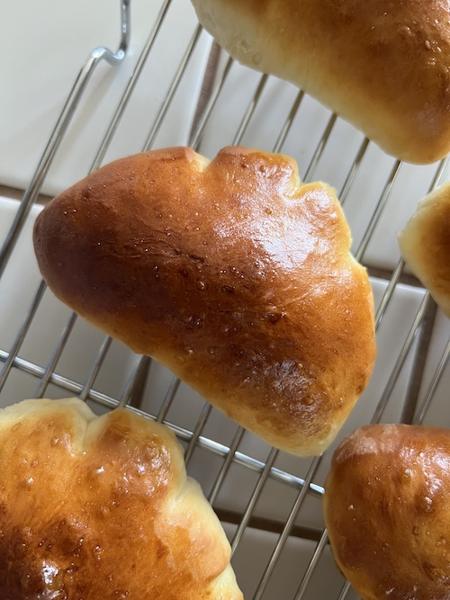

Cream Pan

Description
Soft, sweet bread shaped like a paw and filled with custardy pastry cream. A great treat for afternoon tea, and one of my favorite convenience store breads from Japan. These are best enjoyed hot out of the oven!
Original recipe from cooking with dog.
Ingredients
Bread Dough
- 140g bread flour (or all-purpose)
- 60g cake flour
- 20g butter
- 20g sugar
- 3g salt
- 25g beaten eggs
- 110ml milk (lukewarm in the winter)
- 3g instant dry yeast
- leftover beaten egg for glazing
Pastry Cream
- 3 egg yolks
- 55g granulated sugar
- 8g cake flour
- 8g corn starch
- 250mL milk
- 5mL vanilla extract
Steps
Bread Dough Instructions
- Dissolve the instant dry yeast in the lukewarm milk and let it sit for 5 minutes.
- Combine the sugar, salt, and the two flours in a bowl and stir together with a spatula.
- Add the dissolved yeast to the flour mixture.
- Combine the beaten egg and milk, and gradually add it to the flour while mixing.
- Stir until the flour has absorbed the water evenly and the mixture is completely moistened. Knead until the dough forms a ball, around 3 minutes by hand.
- Fold in the softened butter and knead until it is fully absorbed.
- Shape the dough into a ball, then place it in a bowl and cover it with plastic wrap. Let it rise in a warm place for about 1 hour until the dough has doubled in size.
Pastry Cream Instructions
- In a bowl, place the egg yolks and break them. Add the sugar and beat the mixture until it becomes light yellow and fluffy.
- Add the cake flour and cornstarch. You can sieve the dry ingredients in during this step, but I usually don't. After adding, whisk to combine.
- Heat the milk in a pot. When it starts to steam, turn off the heat.
- Add half of the milk to the egg mixture a little at a time while mixing. When you've added about half of the milk, place the pot on the burner again, and use a mesh strainer to sieve as you pour in the egg mixture from your bowl.
- Turn the heat to medium-low, and continue mixing it with a balloon whisk.
- When it begins to thicken, reduce the heat to low, and whip the cream at full speed.
- The pastry cream begins to turn glossy, and you will see that the consistency starts to turn a little watery. At this stage, keep mixing for 1 to 2 more minutes over low heat.
- Remove the pot from heat and add the vanilla extract. Stir to combine.
- Pour the pastry cream into a glass bowl, and use plastic wrap to cover the surfave (touching the cream) to prevent a film from forming. Chill the cream using an ice pack.
Assembling Cream Pan
- Lightly flour the working surface and turn the bread dough out onto the board. Dust your hands with flour.
- Divide the dough into 8 equal pieces. I use a kitchen scale at this step.
- Gently shape the dough pieces into a ball, cover them with plastif wrap, and let them rest for 15 to 20 minutes.
- Shaping the bread: place one dough piece onto the floured board and flatten it to remove the gas inside. Use a rolling pin to shape the dough into a long oval shape.
- Measure out 35g of pastry cream and place it onto the center of the oval.
- Fold the dough in half, and close the edges by squeezing the edge pieces in the center, and then the left and right. Make sure the seams are completely closed to prevent the filling from oozing out.
- Make three incisions along the closed edge for the "claw" shape, being careful not to cut too deeply into the center.
- Repeat the process for the remaining 7 pieces of bread. Place the pieces onto the baking sheep (oiled or with parchment paper) and cover with plastic wrap.
- Let the dough rise for the second fermentation: this step takes around 50 to 60 minutes at 40˚C (around 100˚F). I wait for around 60 minutes for this stage before preheating the oven.
- When the second rise is over, preheat the oven to 220°C (428 °F). With a pastry brush, gently coat the dough with beaten egg for glazing.
- When the oven reaches 220 °C (428 °F), quickly place the bread in, and lower the temperature to 200 °C (392 °F).
- Bake for 12 to 13 minutes. The time is a rough estimate, so make sure the bread is browned (but not burnt).